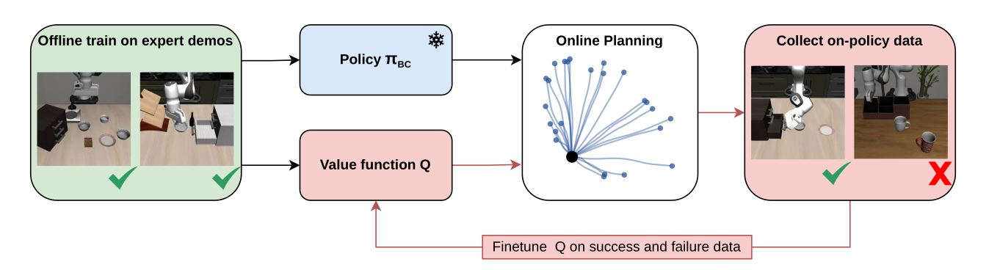

Beyond Imitation:
Self-Improving Robot Policies via Off-Policy Q-Planning

Abstract
Behaviour Cloning (BC) has driven remarkable progress in robot manipulation, yet it is fundamentally limited by its inability to self-improve: a policy that fails cannot learn from that failure without additional human demonstrations. Reinforcement Learning offers a path to self-improvement but has proven difficult to scale to the multi-billion-parameter models underpinning modern robot policies. We propose Q-Planning, which equips a large visuomotor BC policy with a small off-policy Q-function. Q-learning is not restricted to successful demonstrations the way BC is, so the same Q-function can be trained on demos and later absorb both successful and failed deployment rollouts without ever imitating them. We exploit this asymmetry to enable value-guided action selection at inference and online self-improvement that fine-tunes only the Q-function, without ever updating the BC. Evaluated on LIBERO and RoboTwin, six iterations of online self-improvement progressively lift LIBERO-10 success from 93% to 99% while shortening successful episodes by 11%, updating only the Q-function; offline Q-Planning also improves over the BC policy on 4 of 5 benchmarks (+1.4pp on the LIBERO aggregate, +4.8pp on RoboTwin).
TL;DR
- An off-policy Q-function for large multi-task BC policies. A Q-chunking architecture with HL-Gauss categorical outputs and its own DinoV2 and T5 encoders, trained on the same demonstrations used to train the BC policy.
- Self-improvement without touching the BC. Ten iterations of 100 deployment episodes, turned into Q-only updates, lift LIBERO-10 success from 93% to 99% (+9pp over the frozen FastWAM policy) — ahead of five other self-improvement methods given the same budget.
- Self-improvement on a real bimanual robot. From 100 base demonstrations and 20 online episodes per iteration, Q-Planning improves purely from its own deployment failures: stack-cups 40 → 90% and insert-wallet 25 → 80%. SFT on the successful rollouts alone stalls at 55% and 30%.
Self-improvement on a real robot
Two contact-rich bimanual tasks: stacking plastic cups, and the highly dexterous insert-wallet, slotting a credit card into a wallet. From 100 base demonstrations and only 20 online episodes per iteration, with the BC policy frozen and no human intervention, Q-Planning improves purely from its own deployment failures.
Where Q-Planning recovers
A BC policy can only be trained on successful demonstrations — failure trajectories are not what we want to imitate. An off-policy Q-function has no such restriction: it can be trained on any trajectory, successful or failed, because it estimates value rather than imitates actions.
✗ frozen BC
✓ Q-Planning
Same task, same frozen BC policy on both sides. Only the Q-function changed.
Method
Two components: an off-policy Q-function over action chunks, and a self-improvement loop that fine-tunes only that Q-function. At every stage the base BC policy is frozen.
1. Off-policy Q-function over action chunks
Standard scalar Q-regression under sparse terminal rewards is unstable; most transitions carry no reward signal, and the long horizons of manipulation tasks amplify bootstrapping error. We therefore (i) treat the length-H action chunk as a single super-action so the effective bootstrapping horizon shrinks by a factor of H, and (ii) replace scalar regression with HL-Gauss categorical regression, which projects each scalar target onto a fixed grid of bins via a Gaussian kernel and trains the Q-network with a cross-entropy objective.

At inference we draw N action chunks from the frozen BC, score each with $Q_\phi$, keep the top K, and execute their $Q$-weighted average rather than any single sample — averaging beats selecting.
where $\mathcal{K}$ indexes the K highest-scoring of the N candidates and $\lambda$ is a temperature.
2. Self-improvement loop
A BC policy trained only on successful demonstrations has never seen the failure modes that emerge under autonomous execution. Q-Planning closes this loop by deploying the planner, collecting both successful and failed rollouts, and using them to refine only the Q-function. This keeps the cost of one self-improvement iteration proportional to the size of the Q-function (∼1B parameters) rather than the BC policy (multi-billion), which is the expensive component to train.
- Input: BC dataset $\mathcal{D}_{\text{BC}}$, frozen policy $\pi^{\text{BC}}$, Q-function $Q_\phi$, target $Q_{\bar\phi}$
- $\mathcal{D} \leftarrow \mathcal{D}_{\text{BC}}$
- for iteration $i = 1, 2, \ldots$ do
- // Phase 1 — collect rollouts under Q-Planning (BC frozen)
- for task $k \in \mathcal{T}$, episode $j = 1, \ldots, M$ do
- Reset environment; receive $\mathbf{o}_0$
- while episode not done do
- Sample $N$ chunks from $\pi^{\text{BC}}$, score with $Q_\phi$, average the top $K$ to get $\bar{\mathbf{a}}_{t:t+H}$
- Execute $\bar{\mathbf{a}}_{t:t+H}$; observe $r_{t+H},\; \mathbf{o}_{t+H}$
- end while
- Append full episode to replay buffer $\mathcal{D}$
- end for
- // Phase 2 — refine only $Q_\phi$ (BC frozen)
- for $s = 1, \ldots, S$ do
- Sample minibatch $\mathcal{B} \sim \mathcal{D}$ and update: $\phi \leftarrow \phi - \alpha\, \nabla_\phi\, \mathcal{L}(\phi;\mathcal{B})$
- EMA target update: $\bar{\phi} \leftarrow \eta\, \phi + (1 - \eta)\, \bar{\phi}$
- end for
- end for
Results
Benchmark results
Before any environment interaction, Q-Planning already improves over the frozen FastWAM BC policy on 4 of 5 benchmarks (+1.4pp on the LIBERO aggregate). Ten iterations of self-improvement then lift success wherever there is headroom — LIBERO-Spatial to 98.5%, LIBERO-10 to 99%, and the bimanual RoboTwin suite 83.8 → 91.4% — while shortening episodes on all five relative to iteration 0.
| Benchmark | FastWAM | Q-Planning (offline) | Q-Planning (online) | |||
|---|---|---|---|---|---|---|
| Success ↑ | Ep. len. ↓ | Success ↑ | Ep. len. ↓ | Success ↑ | Ep. len. ↓ | |
| LIBERO-Spatial | 90.5 | 106 | 91.5 | 115 | 98.5 | 107 |
| LIBERO-Object | 100.0 | 138 | 99.5 | 139 | 100.0 | 120 |
| LIBERO-Goal | 97.0 | 107 | 99.0 | 110 | 99.0 | 99 |
| LIBERO-10 | 90.0 | 274 | 93.0 | 261 | 99.0 | 224 |
| RoboTwin (47 tasks) | 83.2 | 220 | 83.8 | 279 | 91.4 | 232 |
| Mean | 92.1 | — | 93.4 | — | 97.6 | — |
Both Q-Planning columns use the same frozen BC policy; only the online one collects rollouts and fine-tunes $Q$. The offline column is iteration 0 of the self-improvement run and the online column is iteration 10, so each row compares like with like. The submitted paper reported six iterations; the runs here carry the loop out to ten.
Each cell in the online column is the end of a run rather than a single measurement, and the path there is the same one the real robot took. RoboTwin climbs steadily across all ten iterations and LIBERO-Spatial reaches 98.5%; the two suites already at or above 99% have no room left in success, so the loop spends its budget on efficiency instead — the Ep. len. column above.
Against other self-improvement methods. Every method here starts from the same frozen BC policy and gets the same online budget: ten iterations of 100 rollouts, run on LIBERO-10. Best-of-N (the single highest-scoring BC sample, no averaging) plateaus at 95% — value-guided selection helps, but it is the loop that carries success to 99%. SFT on successes, the direct test of “learns from failures”, plateaus at 93.5%: re-imitating only successes cannot absorb the failure signal $Q$ can. DSRL is the other offline-to-online method, yet our action-space $Q$ improves stably. The clips show one LIBERO-10 task over the first six iterations.
Positioning against the closest methods
V-GPS steers a frozen policy with an offline-trained value and never iterates online. DSRL and IBRL adapt online but each trains an auxiliary actor, and IBRL and DAWR update policy weights — which we avoid at VLA scale. Q-Planning alone is BC-frozen, plug-and-play with a multi-billion-parameter policy, and self-improving from failures with no auxiliary actor, using only a ∼1B $Q$-function.
| Method | BC frozen | Plug-and-play large VLA | Learn from failures | Offline-to-online $Q$ | No aux. actor |
|---|---|---|---|---|---|
| V-GPS | ✓ | ✓ | ✗ | ✗ | ✓ |
| DSRL | ✓ | ✓ | ✓ | ✓ | ✗ |
| IBRL | ✗ | ✗ | ✓ | ✗ | ✗ |
| DAWR | ✗ | ✗ | ✓ | ✗ | ✗ |
| Q-Planning (ours) | ✓ | ✓ | ✓ | ✓ | ✓ |
Planning latency
For real-time control we draw candidates with 3-step diffusion — fewer hyper-parameters, and multimodal so not confined to a Gaussian envelope around the BC mean — keeping the top-K $Q$-weighted average unchanged: 400 ms/step on RoboTwin (42% of the 960 ms budget), 3.2× faster than the iterative sampler used in the paper and 1.4× faster than FastWAM itself (10-step diffusion).
Full latency profile (1× NVIDIA L40S, median ms over 60 timed steps)
| Condition | $Q$-evals | LIBERO budget 333 ms |
RoboTwin budget 960 ms |
|---|---|---|---|
| BC only, 3 denoise steps | 0 | 273 ms fits | 273 ms fits |
| BC only, 5 denoise steps | 0 | 380 ms over | 379 ms fits |
| BC only, 10 steps (eval baseline) | 0 | 646 ms over | 640 ms fits |
| BC only, 20 denoise steps | 0 | 1179 ms over | 1166 ms over |
| Q-Planning, N=8, 3 denoise steps | 8 | 322 ms fits | 327 ms fits |
| Q-Planning, N=16, 3 denoise steps | 16 | 337 ms over | 352 ms fits |
| Q-Planning, N=32, 3 denoise steps — deployed (RoboTwin) | 32 | 371 ms over | 400 ms fits |
| Q-Planning, N=64, 3 denoise steps — deployed (LIBERO) | 64 | 640 ms over | 716 ms fits |
| Iterative sampler ×3 rounds (paper) | 192 | 1114 ms over | 1276 ms over |
| Iterative sampler ×1 round | 64 | 815 ms over | 867 ms fits |
Median ms per planning step. The budget is the time available before the next replan: LIBERO replans every 10 steps at 30 Hz (333 ms), RoboTwin every 24 steps at 25 Hz (960 ms); fits means the step completes inside it. LIBERO's budget is tight enough that even BC-only inference exceeds it at the 10-step diffusion used for evaluation. Encoders are amortised across all $N$ candidates (23–26 ms); the $Q$ decoder costs ≈2.3 ms per candidate on LIBERO and ≈3.1 ms on RoboTwin.
Q-value trajectories

Limitations
Q-Planning cannot bootstrap from scratch: removing the BC warm-start collapses LIBERO-10 success from 93% to 3.3%. The method inherits the BC's action-distribution biases and its gains scale with BC quality. The sparse terminal reward assumes a reliable per-episode success detector — trivial in simulation, and on the real-robot tasks above still supplied outside the loop rather than learned. Online planning adds decoder latency relative to direct BC inference; 3-step diffusion draws bring the deployed planner to 42% of the RoboTwin control budget, but folding the Q-signal back into the policy via gradient fine-tuning remains the route to removing it entirely at deploy time.
BibTeX
@misc{qplanning2026,
title = {Beyond Imitation: Self-Improving Robot Policies via Off-Policy Q-Planning},
author = {Varun Giridhar and Anant Khandelwal and Jeremy A. Collins and
Ignat Georgiev and Animesh Garg},
year = {2026}
}